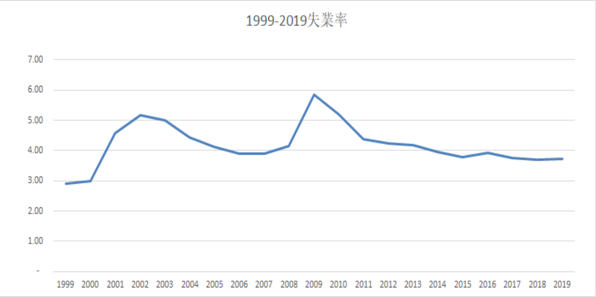

一國的經濟成長指該國實質總產出或每人平均實質國民所得持續不斷增加的現象。通常所謂經濟成長率(economic growth rate)是指「實質總產出」或「實質國內生產毛額(gdp)」的年增率。國際間多以經濟成長率作為表示一國經濟實力、人民福祉和國際地位的指標。

「失業率」係指失業者占勞動力之比率，其中失業者為參採國際勞工組織（ILO）之規定，在資料標準週內年滿15歲同時具有下列條件者：(1)無工作；(2)隨時可以工作；(3)正在尋找工作或已找工作在等待結果；此外，尚包括等待恢復工作者及找到職業而未開始工作亦無報酬者。
GDP意思是指一個國家在特定時間內(一季或一年)，經濟活動產出的產品或勞務的市場價值總額， 這個生產總值是國民經濟的核心指標，可以衡量出一個國家經濟健康狀況、發展水準。